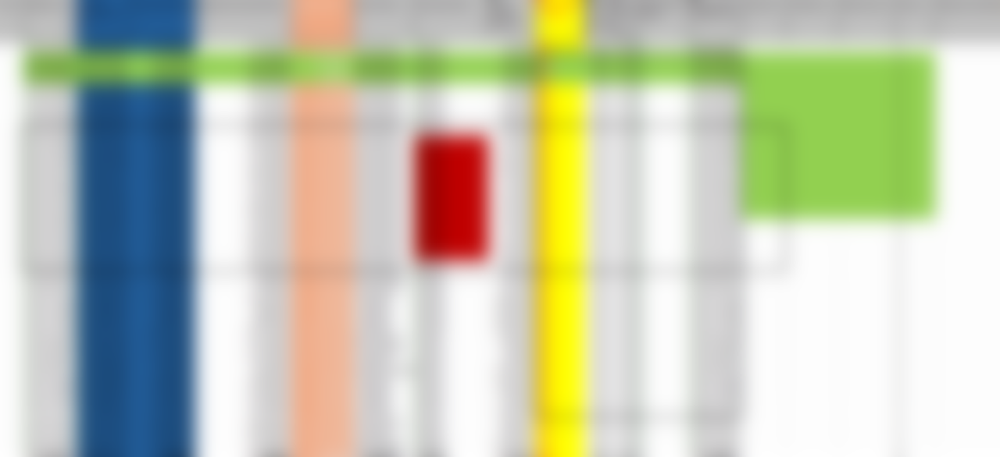
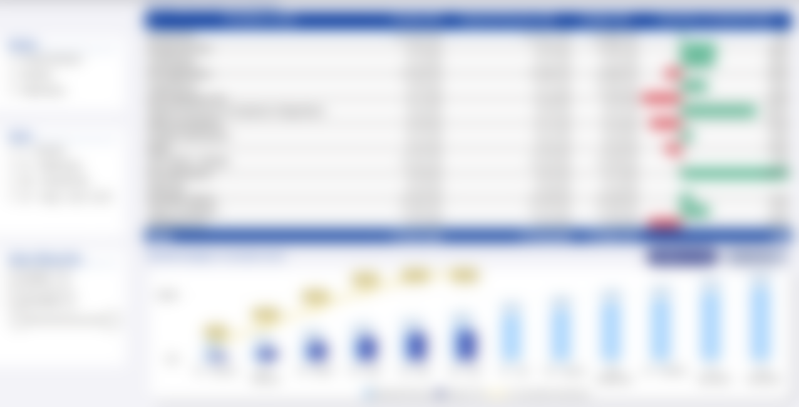
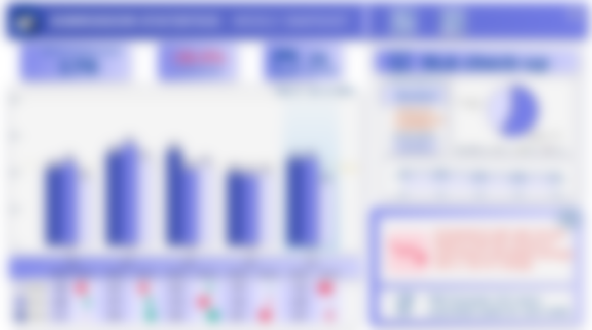
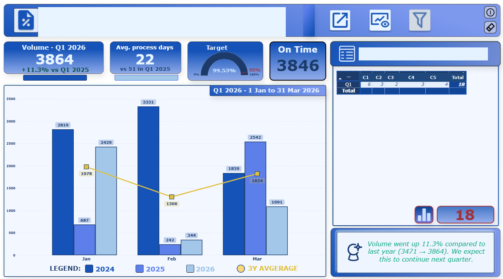
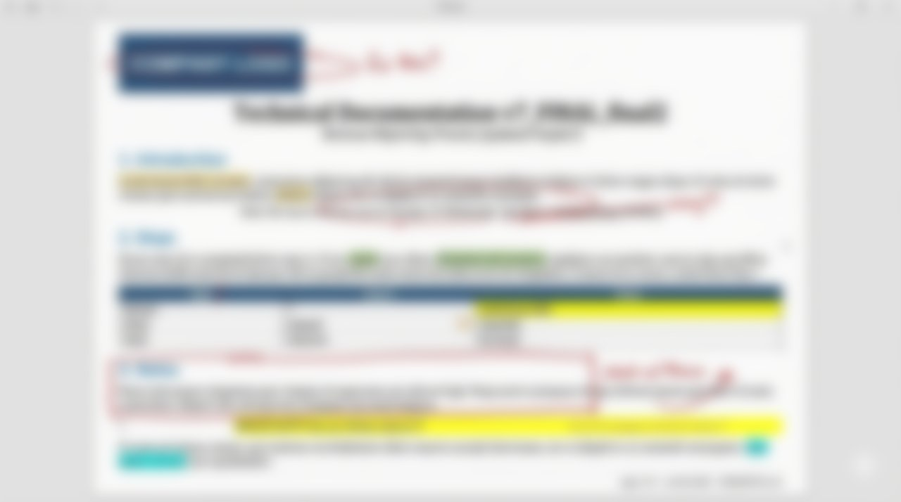
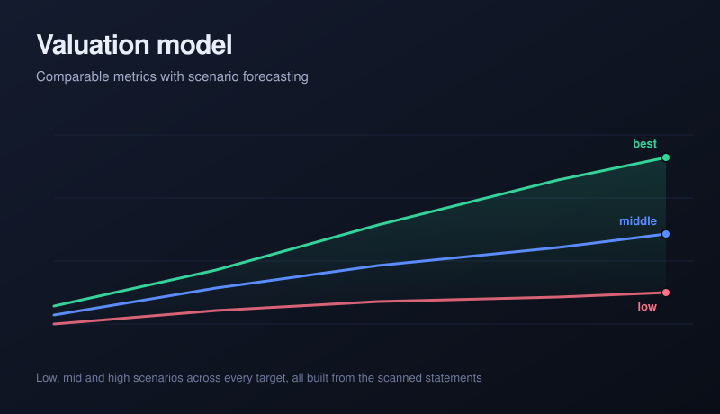
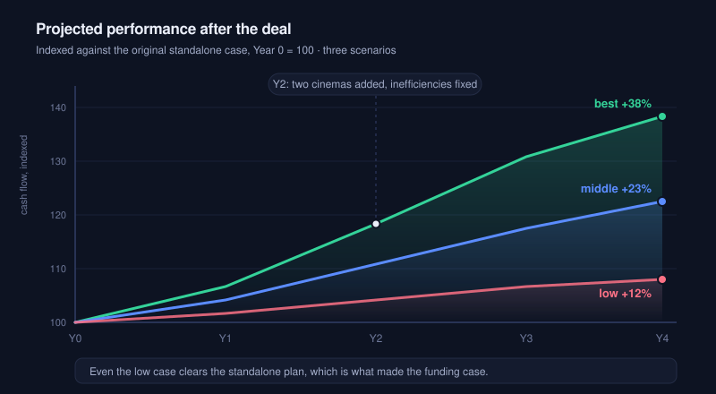
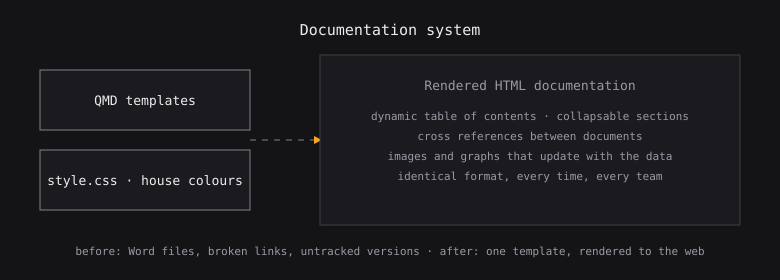
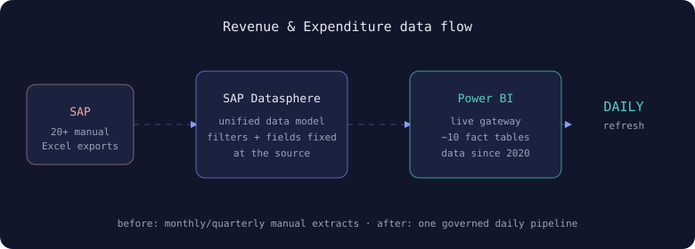

Every day I'm trying to be a better financial engineer. Mostly that means finding the report someone still builds by hand every Monday, and making it stop needing them.
So far it's been mostly good problems, and fixing bugs that I totally did not write. git blame, unhelpfully, disagrees.
pandas, the parsers, and the deeply boring glue between them
models, star schemas, and a few joins I would write differently now
DAX, and then explaining DAX to people who did not ask
where the data actually lives, for better or worse
I try my best to create things that are useful and professional.

EFFORT, on all builds, always
yes, the maths is wrong.
* roundingrounded generously, in my own favourWhat I've been working on
grab the handle

beforeafter ⇄Revenue & expenditure reporting
There were twenty-odd of these. Each one got pulled out of SAP by hand and then filtered inside somebody's own workbook, so Finance had one number and Procurement had a different one, and you'd usually find that out halfway through a meeting. It's one governed model now. It refreshes overnight and nobody exports anything.
20 reports → 1 model. Read it →

Submission inbox
A macro somebody wrote in 2014 and then left. It handled 500 submissions a week, mostly. Every so often one just didn't arrive and we would find out a month later.
2014 macro → something readable
Invoice reconciliation
Five extracts that someone sat and matched by eye once a month. It took most of a day and still missed things, which is what happens when you ask a person to be a computer.
5 extracts → 1 click

Documentation that stays true
Word files with broken links and nobody's name on them. If a thing only runs while I am around, I have not built a solution, I have built a hostage situation.
stale docs → rendered from source

Did crypto regulation move the market?
A Fama and French model with a regulation dummy, run across the top five cryptoassets. The EU answer and the US answer turned out to be very different.
my thesis, in one chart

From scanned paper to a valuation
Somebody handed me a stack of scanned statements and asked what the business was worth. I built the whole model from the paper up.
paper → a case for funding

Everything else
The full list, including the thing that is still half built and not ready to be looked at.
all projects →There is a person attached to all this
He runs in the evenings, reads crime novels, and holds a competitive record he will absolutely bring up unprompted.